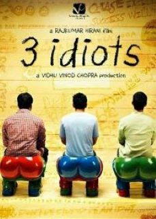
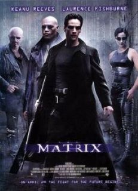

Tüm SınırlarımızıKırıyoruz
Sizi anın içinde hissettirecek filmer ve daha fazlası yolculuğa hazır mısınız?
Sinema Dünyasına Hoş Geldiniz
 142 dk. Stephen King'in Rita Hayworth ve Shawshank'in Kefareti adlı novellasından uyarlanan film, masumiyetini iddia etmesine rağmen karısını ve sevgilisini öldürdüğü gerekçesiyle Shawshank Devlet Cezaevi'nde yaklaşık 20 yılını geçiren bankacı Andy Dufresne'in hikâyesini anlatır.
142 dk. Stephen King'in Rita Hayworth ve Shawshank'in Kefareti adlı novellasından uyarlanan film, masumiyetini iddia etmesine rağmen karısını ve sevgilisini öldürdüğü gerekçesiyle Shawshank Devlet Cezaevi'nde yaklaşık 20 yılını geçiren bankacı Andy Dufresne'in hikâyesini anlatır."karakterimizin özgürlüğü için beslediği umudun nasıl bir kaçış macerasına dönüştüğünü izleyeceğiz. Korktukça tutsak, umut ettikçe özgürsün."
En Sevilen Filmler
-
3 Ahmak
Hindistan'ın en iyi mühendislik okuluna başlayan öğrencilerin hayatını anlatıyor özet olarak. Sistemin daima yarış üzerine kurulu olduğu, herkesin en iyi olmaya çabaladığı bir okulda sistemi değiştirmeye çalışan bir öğrenci ve onun en yakın 2 arkadaşı. Başlarından geçenler, hayattan aslında ne istedikleri.
-
Matrix
Karakterimiz Neo, matrix filmi içinde gerçek dünyada kalan son insan şehri Zion'u makinelerin saldırısından korumaya çalışıyor. Bu sırada, Matrix'i korumaya çalışan bilinçli bilgisayar programları olan ajanlar ile mücadele etmesi gerekiyor. Özellikle Ajan Smith, Neo'ya çok sorun çıkartıyor.
-
Coco

Filmin hikâyesinde yanlışlıkla ölüler ülkesine götürülen Miguel Rivera adlı 12 yaşındaki bir çocuk ele alınmaktadır ve burada ölü olarak bulunan ve müzisyen olan büyük-büyük babasının canlı olarak yaşadığı aileye geri dönmesi istemektedir. Filmin konsepti, Ölüler Günü adlı Meksika tatiline dayanmaktadır.